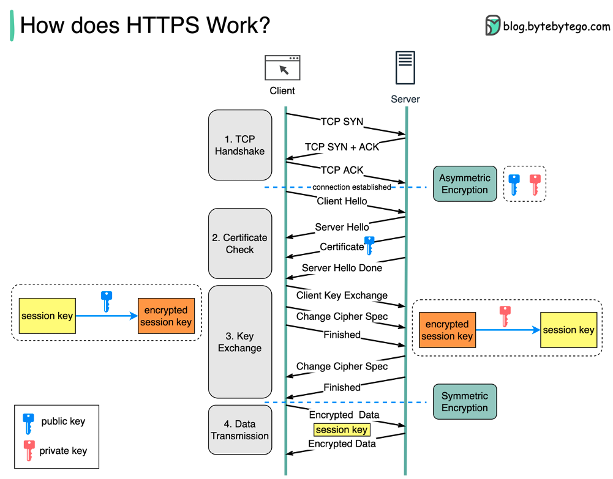
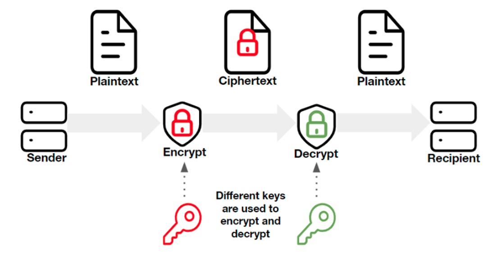
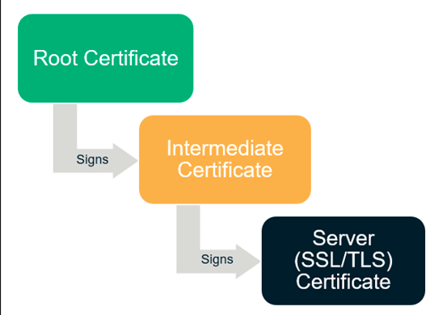
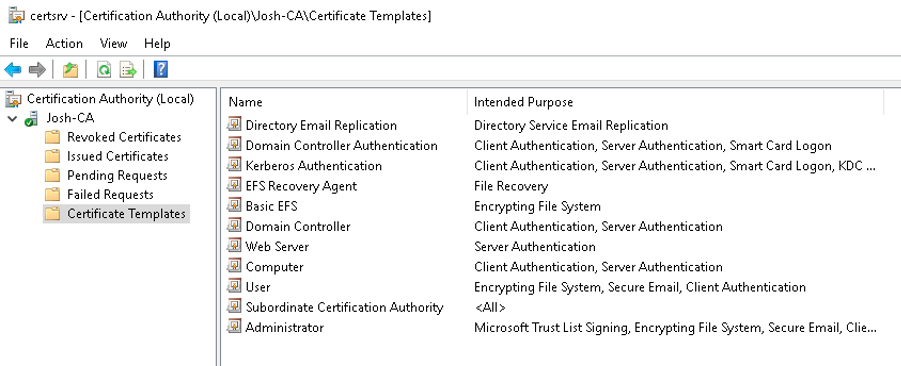
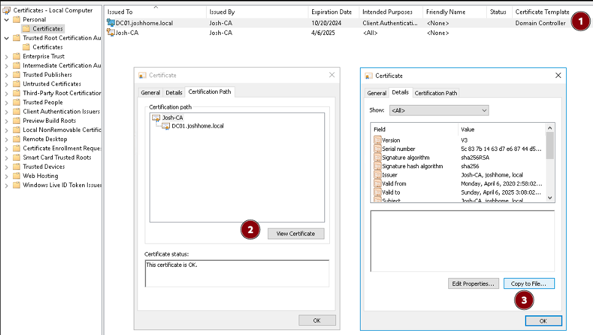
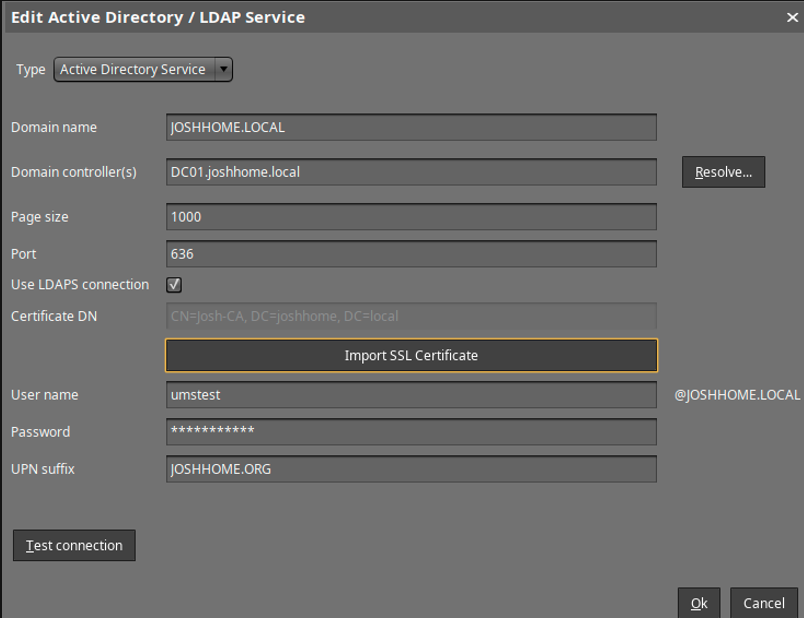
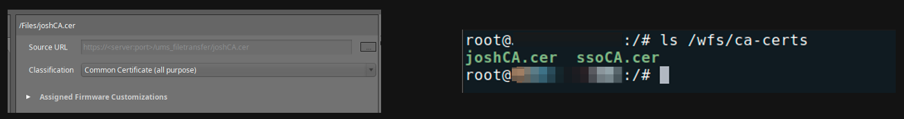
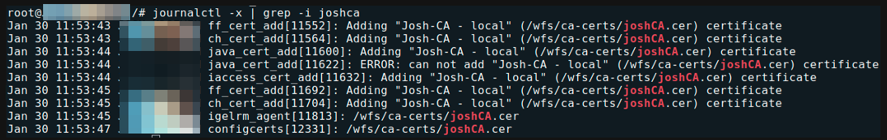

HOWTO Certificates
Certificates/PKI Basics
SSL/TLS Encryption
- The foundation of the modern internet – data in transport should be encrypted!

Asymmetric vs. Symmetric Encryption
Symmetric and asymmetric encryption are two types of keys that have different features and uses:
- Symmetric encryption uses the same key to encrypt and decrypt data.
- Asymmetric encryption uses two separate keys, one for encryption (public key) and one for decryption (private key).
- Symmetric encryption is faster and uses shorter keys (usually 128 or 256 bits).
- Asymmetric encryption is more secure and uses longer keys (sometimes 2048 bits or longer).

x.509 Certificates
- The binding of a public/private key to a specific identity
- Certificate items of note:
- Subject DN – The entity a certificate belongs to. Contains organization name, country code, department, etc.
- Common Name – The domain being secured. Part of the Subject DN. Can be a wildcard (*)
- Issuer – The entity that signed and verified the certificate
- Validity Period – Certs are only considered valid for a set period of time
- Public Key/Public Key Algorithm
- X.509 extensions – the most common are Subject Alternative Names (SANs)
Certificate File Types & Encoding Formats
- PEM/Base64 - Most popular/supported encoding format, with plaintext headers at the beginning and end of the encoded data. Extensions include .crt, .cer, .pem (individual certs), .key (individual encrypted private key)
- P7B/PKCS#7 – Certificate chains/bundles encoded in Base64, can NOT contain private keys.
- DER/Binary - Encoding format that does NOT have plaintext/readable headers. Common extensions include .cer and .der
- PFX/P12/PKCS#12 – Binary format that can contain the certificate chain AND private key in a single .pfx or .p12 file.
NOTE: TL;DR – Use Base64 for everything, don't rely on file extensions, .pfx files may need to be broken open using OpenSSL!
Certificate Example – IGEL.com
Certificate Chains & Authorities
- How can we trust that the identity information within a certificate is true and accurate?
- It's impossible to verify each endpoint certificate, so modern operating systems instead rely on a trusted third party to sign these certs – a certificate authority
- Modern operating systems contain a list trusted Root CAs – from those Root CAs, trust propagates downward

Certificate Chains & Authorities
PKI Basics – Microsoft Enterprise CA
- Windows server role – typically on standalone machine(s) in a multi-tiered configuration, but can be installed alongside your DC for lab purposes
- Will generate a CA certificate upon role setup – this CA certificate is used to issue endpoint certificates
- By default, domain joined Windows devices will add Enterprise CA certificates to your trust store.
- Certificate issuance is usually handled via templates

Certificates in OS 11
Common Scenario 1 – LDAPS in UMS
- Confirm that you have an Enterprise CA and an endpoint cert bound to your domain controller
- We are looking for the ROOTMOST certificate, not an individual domain controller certificate!
- From a domain controller, we can go to certificates.mmc and follow the endpoint cert up:


Common Scenario 2 – ICG With a Public CA
- Fill out a CSR for your CA of choice, ensuring that they have SANs for ALL ICG URLs they may be using (or a wildcard!)
- Private keys are generated alongside the CSR – save it!
- You will need:
- The endpoint cert private key, decrypted in Base64
- The endpoint, intermediate and root certificates, in individual files in Base64 format
- Import in order – don’t forget the private key
Common Scenario 3 – Certificate File Objects
- Common Certificate (all purpose) will serve most of your needs – less permissions management!
- Double check your certificate under /wfs/ca-certs

- Reverse engineering – follow that file object in the journal

Troubleshooting Certificates
NOTE: The Most Common OpenSSL Commands
Command Line Tools
- Curl – a powerful command line tool for sending or transferring data to a server. When using curl in combination with HTTPS, you can see the TLS handshake in real time.
- Useful example:
curl –vvI https://icg.domain.com:8443
- Useful example:
- Openssl – the Swiss Army Knife of certificate/SSL/TLS troubleshooting.
- Check a certificate:
openssl x509 -in certificate.crt -text –noout - Check an SSL Connection:
openssl s_client -connect www.paypal.com:443 - Extract key/cert from pfx:
openssl pkcs12 -in [yourfile.pfx] -nocerts -out [privatekey.key]openssl pkcs12 -in [yourfile.pfx] -clcerts -nokeys -out [drlive.crt]openssl rsa -in [privatekey.key] -out [privatekey-decrypted.key]
- Check a certificate:
GUI Tools
- When troubleshooting SSL/certificate issues involving the ICG or UMS Web Certificate, always ask for uncropped screenshots of
Certificate Management > Web and Cloud Gateway - What about the Device Communication (tckey) certificate? The simple answer is ‘do not touch’
- The browser is a great GUI troubleshooting tool, but don’t forget that the browser may ‘complete’ the chain and show everything as good where the OpenSSL libraries or other programs may be more picky!
Links and Resources
- A Primer on ECC Cryptography
- OpenSSL Reference
- IGEL Community LetsEncrypt/Certbot tutorial
- Building an AD CS Server in Your Lab
- KB: Configure the UMS to Integrate Reverse Proxy with SSL Offloading
Starting with UMS 12.04 - Improvements for Certificate Import
Starting with UMS 12.04, certificate management now adds sanity check to the imported chains:
- Make sure chain is complete
- Required private keys are present
- Leaves need to have valid
subject alternative names
Will now allow the import of jks and pkcs12 key stores and builds chain automatically:
- Highlight missing elements in the imported result (e.g. private keys)
- Add missing root certificates from the java trust store, if available
Can now manage certificates via the command line:
- Set chain of web certificates
- Automate process of UMS installation
- Add certificates, keypairs, or complete keystores
- Remove existing certificates, web certificates, and key stores from the database